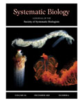
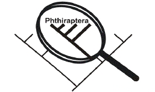

Society of Systematic Biologists
Home of Systematic Biology
Popular contentSyndicateCategories
User loginNavigationWho's onlineThere are currently 0 users and 3 guests online.
|
53rd Annual Systematics Symposium at the Missouri Botanical Garden
Dates: 13-14 October 2006 Diversity at SSE/SSB 2006Call for applications for undergraduates of diverse backgrounds to attend the 2006 meeting of the Society for the Study of Evolution/Society of Systematic Biologists and Call for volunteer mentors for this program from graduate students, postdocs and faculty. For the fourth consecutive year, the Undergraduate Diversity at SSE/SSB program, funded by a the Undergraduate Mentoring in Environmental Biology (UMEB) program at NSF, will take place again at the 2006 meeting this June in Stony Brook, New York and we are now accepting applications. The program will send 15 undergraduates from the US and Puerto Rico to attend the SSE/SSB meetings to, present posters and interact with graduate student, postdoc and faculty mentors. The application deadline is April 1, 2006. Molecular Systematist - CSIRO Entomology Australia
Salary AUS$79K to AUS$93K, closing date 9 April 2006. For more details see the CSIRO recruitment site. Second Meeting of the International Society for Phylogenetic NomenclatureThe Second Meeting of the International Society for Phylogenetic Nomenclature will be held in New Haven, Connecticut, at Yale University, from June 28 to July 2, 2006. This meeting is an opportunity to discuss topics that pertain directly or indirectly to phylogenetic nomenclature in general and the PhyloCode in particular. In addition to providing a forum to contribute oral and poster presentations, this meeting will also include three symposia with a number of invited guest speakers. Contact Information December 2005 data online Society for Molecular Biology and Evolution Annual Meeting
The conference will open on the evening of Wednesday, May 24 with a Welcome Social and Registration from 7:00 p.m. - 11:00 p.m.� The opening symposia and contributed sessions will begin at 8:00 a.m. on May 25.� The closing symposia and contributed sessions will take place from 8:00 a.m.- 12:00 noon on Sunday, May 28. A schedule of events is here. To register visit the web site (Early registration from Feb 1 - April 1, 2006). Abstract submission is online. Elizabeth E. Bascom Fellowships in Botany for Latin American WomenThe Missouri Botanical Garden announces the eighth annual competition for the Elizabeth E. Bascom Fellowships in botany for Latin American women. The fellowship will cover the cost of a round-trip air ticket to St. Louis, lodging in the Garden apartment, and a small stipend for food and miscellaneous expenses in St. Louis for a period of one to three months. The competition is open to young Latin American women who work in the field of botany or are botanists at universities or other governmental or non-governmental scientific institutions in Mexico, Central America, and South America. Applicants must have an undergraduate degree from a university. The fields of investigation are limited to systematic botany, ecology, or conservation. The deadline will be 1 July 2006. All interested applicants should visit this website (in Spanish) to obtain a list of application materials, or contact Alina Freire-Fierro, e-mail alina.freire-fierro@mobot.org, P.O. Box 299, St. Louis, MO 63166-0299, USA; voice: 314-577-9535; fax: 314-577-0830. TaxonSearch
3rd International Congress on Phthiraptera (ICP3)
 This Congress will bring together leading authorities on lice to review our current knowledge of lice and louse-borne diseases. A major objective of this conference will be the coordination of research into lice and louse-bone-pathogens. Systematics plays an increasingly important role in this endeavourand this Congeress will provide a rare opportunity for interaction between members of the medical, veterinary and systematic community. The Third Congress will include a diverse array of invited plenary lectures, oral presentations and poster presentations from world authorities. Call for 2007 SymposiaThe Society for Systematic Biologists invites proposals for symposia at the 2007 SSB meeting to be held at the Allan Wilson Center for Molecular Ecology and Evolution in Auckland, New Zealand 18-22 June 2007. The meeting will be held jointly with the American Society of Naturalists and the Society for the Study of Evolution. Proposals should include (1) a descriptive title, (2) one or two paragraphs explaining the purpose of the symposium and its relevance to systematics, (3) a list of presentations including proposed speakers, their institutions or affiliations, and their presentation titles, (4) an indication of whether the speakers have been invited and whether they have agreed to participate, and (5) the proposed length of each talk. |
Latest issue
EVOLDIRphylobabble.orgiPhyloPhyloseminarSystematics AssociationNESCentThe Genealogical World of Phylogenetic NetworksCiteULike PhylogenyEvolutionary Bioinformatics
CladisticsBMC Evolutionary Biology
Molecular Biology and Evolution |
 Follow us on Twitter
Follow us on Twitter Find us on Facebook
Find us on Facebook